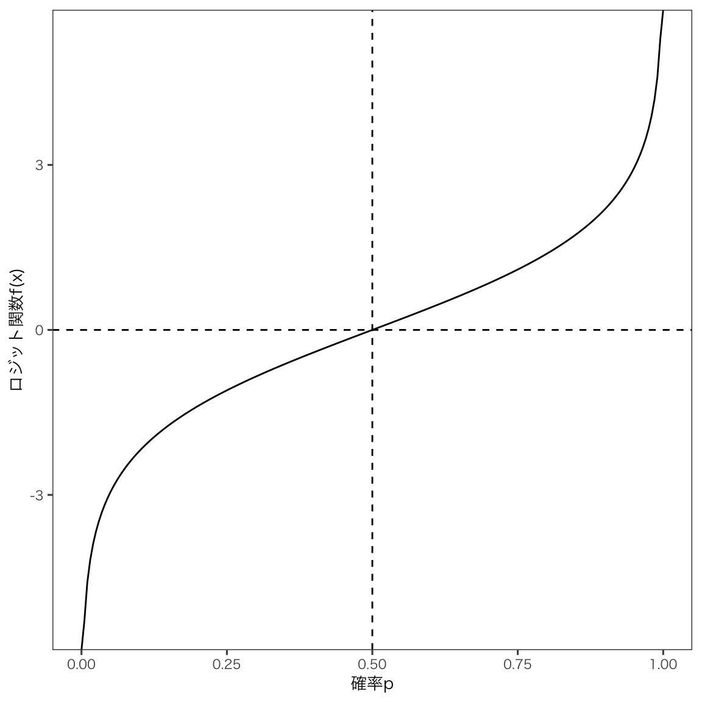
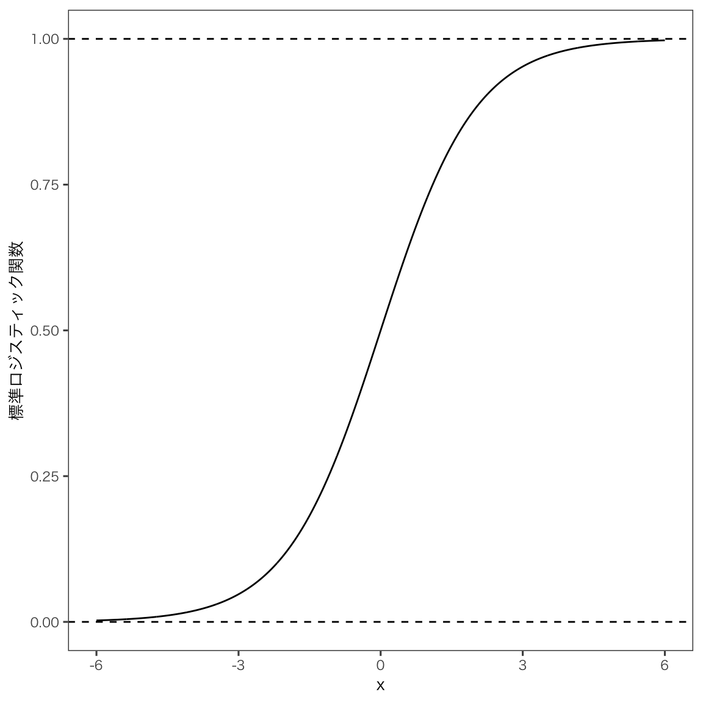

14 ロジスティック回帰分析
14.1 ロジスティック関数
「当たったか、外れたか」、「ある会計基準を選択したか、否か」、「ある商品を購入したか、否か」など、結果が二値で表されるような変数を二値変数(binary variable)といい、二値変数を応答変数として回帰分析したいとき、ロジスティック回帰分析が便利です。
事象Aと事象Bのどちらかが起こるとき、事象Aが起こる確率をpとすると、事象Bが起こる確率は1-pとなります。 pは確率を表しているので，0から1の間の値をとります。 この事象Aが起こる確率と事象Aが起こらない確率の比をオッズ(odds)といいます。
\frac{p}{1-p}
このオッズは，0から\inftyの間の値をとります。 たとえば事象Aが起こる確率が10％と見積もられる場合，オッズは0.1/0.9 = 0.111となります。 さらにこのオッズを対数変換して，pの関数f(p)としたものをロジット関数と言います。 こうすることで，pは0から1の値をとるとき，f(p)は-\inftyから\inftyの値をとるようになります。
f(p) = \log \left( \frac{p}{1-p} \right) = \log p - \log (1-p)
図で書くとこうなります。
次に，ロジット関数f(p)の逆関数を考えます。 対数関数の逆関数は指数関数になるので，先のロジット関数の両辺の指数をとると，次のようになります。
\exp(f(p)) = \frac{p}{1-p}
この式をpについて解くと，次のようになります。
\begin{aligned} p &= \frac{\exp(f(p))}{1 + \exp(f(p))} \\ &= \frac{\frac{\exp(f(p))}{\exp(f(p))}}{\frac{1 + \exp(f(p))}{\exp(f(p))}} \\ &= \frac{1}{\frac{1}{\exp(f(p))}+1} \\ &= \frac{1}{1 + \exp(-f(p))} \end{aligned}
ロジット関数f(p)の逆関数をf^{-1}(x)とすると，f^{-1}(x)は-\inftyから\inftyの値をとるとき，pは0から1の値をとるようになります。 これからの分析に必要な関数の形がでてきました。 この関数f^{-1}(x)を標準ロジスティック関数と言います。
f^{-1}(x) = \frac{\exp(x)}{1 + \exp(x)} = \frac{1}{1 + \exp(-x)}
標準ロジスティクス関数は次のような形をしています。

標準ロジスティクス関数の定義域は-\inftyから\inftyですが，xが0のとき，f^{-1}(x)は0.5となります。
応答変数が二値変数となる場合の分析手法で最もよく利用されているものが，ロジスティック回帰分析です。 手元の応答変数データは0と1の2種類しかなく、このようなデータを生み出す確率モデルにはベルヌーイ分布が適しています。 ベルヌーイ分布は、確率pで1、確率1-pで0をとる確率分布です。 この確率pを先ほど導出したロジスティック関数(logistic function)で表します。
\text{logistic}(x) = \frac{\exp(x)}{1 + \exp(x)} = \frac{1}{1 + \exp(-x)}
このロジスティック関数を使って、確率pを次のように表すことができます。
\Pr(y_i = 1) = \text{logistic}(b_0 + b_1x_i) = \frac{1}{1 + \exp(-\beta_0 - \beta_1 x_i)}
この式は、x_iが与えられたときにy_iが1となる確率を表しています。 この式を変形すると、次のようになります。
\log \left( \frac{\Pr(y_i = 1)}{1 - \Pr(y_i = 1)} \right) = \beta_0 + \beta_1 x_i
ようやく回帰分析の式になりました。
14.1.1 最尤法
つぎに，この\betaを推定する方法を考えます。 この回帰モデルは非線形であるため，モデルと観測値の誤差を最小にする，という最小二乗法を使ってパラメータを推定することはできません。 そこで，最尤法(most likelifood method)を使ってパラメータを推定します。 最尤法とは，観測値が得られる確率を最大にするようなパラメータを推定する方法で，一定の条件のもとで優れた推定量を与えることが知られています。
最尤法について考える前に，まずロジスティック回帰のモデルの背後にある線形モデルについて考えてみます。 観察される応答変数y_iは0か1という二値変数となりますが，その背後には，線形関係があると考えることができます。 つまりある閾値y^*を設定して，y_iがy^*より大きいときは1，y^*より小さいときは0となると考えることができます。
y_i = \begin{cases} 1 & \text{if } \beta_0 + \beta_1 x_i + \epsilon_i > y^* \\ 0 & \text{if } \beta_0 + \beta_1 x_i + \epsilon_i \leq y^* \end{cases}
14.2 ロジスティック回帰分析の手順
回帰分析とほぼ同じ手順です。 実際にRでロジスティック回帰分析を行う場合は，lm()関数ではなくglm()関数を使うだけで，ほぼ同じように分析できます。